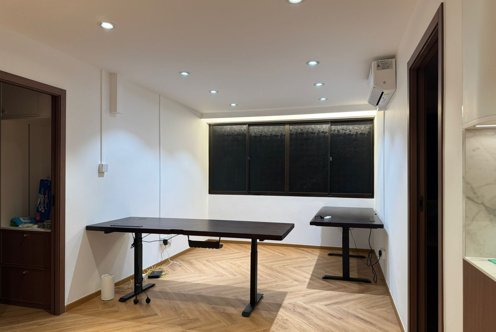

HDB window replacement cost in Singapore

Windows are the one trade in a Singapore home where who does the work is regulated, not just how. Replacement must go through a BCA-approved window contractor. On price, expect roughly S$350–700 for a top-hung, S$450–900 for a casement and S$500–1,000 for a sliding window supplied and installed, or S$2,500–5,000 to do a whole 4-room flat. This guide covers cost by type, the licensing rule, and how to tell a repair from a replacement.
First: the rule that makes windows different
In Singapore, window replacement and installation in residential buildings must be carried out by a window contractor approved by the Building and Construction Authority. This is a credential specific to window work. It is not the same thing as a general renovation licence, and a competent renovation contractor is not automatically permitted to fit your windows.
Practically:
- Ask for the approved contractor's details before work starts, not after. It is one question and it takes a minute.
- A window fitted by an unapproved party becomes a compliance problem attached to your flat, not to whoever fitted it.
- If you are engaging a main renovation contractor, ask specifically who is doing the windows and confirm they are approved. Good contractors bring in an approved specialist and say so.
- Confirm current requirements directly with BCA. This is not an area to take a contractor's word on.
Repairs to hardware are a lighter matter than replacing a window, but the moment a window or its frame is being replaced, this applies.
Window replacement cost by type (2026)
| Work | Indicative cost (SGD) | Notes |
|---|---|---|
| Top-hung window | $350 – $700 each | Smallest and simplest; common in kitchens and toilets |
| Casement window | $450 – $900 each | Side-hinged; opens fully for ventilation |
| Sliding window | $500 – $1,000 each | No swing arc; wider openings cost more |
| Whole 4-room flat | $2,500 – $5,000 | Depends on opening count, glass and frame finish |
| Glass panel replacement | $150 – $400 | Single pane, existing frame retained |
| Hardware repair, hinges, rollers, handles | $80 – $250 | Per window; cheapest when bundled |
| Casement rivet replacement | $50 – $120 per window | Aluminium rivets to stainless steel bolts |
| Gasket / seal replacement | $60 – $180 per window | For rain ingress with a sound frame |
| Child safety restrictor | $40 – $100 each | Limits opening width |
What moves these numbers: opening size, glass specification (thickness, tinted, laminated, frosted), frame finish (mill, powder-coated, wood-grain), floor level and access, and how many windows are done in one visit. As with every trade on this site, doing all the openings in one mobilisation is dramatically cheaper per window than three separate visits.
Repair or replace?
The frame decides it, not the age.
| Repair when | Replace when |
|---|---|
| Rollers are stiff or noisy but the track is sound | The aluminium frame is corroded or pitted through |
| A handle, hinge or stay has broken | The frame has distorted and no longer holds the sash square |
| Gaskets have hardened and let rain in | Rain still tracks in after new gaskets |
| A single pane is cracked | Multiple panes and hardware are failing together |
| The window closes and seals, just badly | The same window has already been repaired twice |
Corrosion in the frame is the clearest replace signal, because there is nothing sound left for new hardware to fix into. New hinges bolted to corroded aluminium are a repair with a short and unpredictable life. Everything else on the left column is genuinely worth fixing: a S$150 roller and gasket job can buy another decade from a sound window.
Casement windows and the rivet issue
Older aluminium casement windows in Singapore were assembled with aluminium rivets, which weaken over time and have been associated with window panels working loose and detaching. Requirements have applied for the rivets on affected older casement windows to be replaced with stainless steel bolts and screws.
If your flat has aluminium casement windows from that era and you cannot confirm the work was done, have them checked. At S$50–120 a window this is one of the cheapest pieces of work in this entire guide relative to what it prevents, and it must go through an approved window contractor. Confirm the current position with BCA.
The six-month window check
Windows fail slowly and visibly for months before they fail suddenly. Ten minutes, twice a year:
- Hinges and rivets. Any corrosion, looseness or white powdery residue around fixings.
- Squareness. Does the sash sit evenly in the frame, or does it need forcing to close?
- Gaskets. Intact and flexible, or hardened, shrunken and cracked?
- Tracks and rollers. Clean and running smoothly, or gritty and binding? Most roller failures are just dirt.
- Drainage holes in the bottom track, clear so rain drains out rather than backing up into the room.
- Safety devices and restrictors. Still fitted and still working.
Clean the tracks while you are there. Grit in a sliding track is the single most common cause of a window that "needs replacing" and actually needs ten minutes with a vacuum and a wipe.
Water coming in during heavy rain
A common complaint with a diagnostic order worth following, because the expensive answer is usually not the right one:
- Blocked drainage holes first. The bottom track is designed to collect water and drain it outward. Blocked holes turn the track into a reservoir that overflows inward. Free to fix.
- Then gaskets. Hardened seals let wind-driven rain past. S$60–180 per window.
- Then the perimeter sealant where the frame meets the masonry. This is silicone that ages and shrinks, and it is often the real culprit. Cheap to redo.
- Then the frame. Only when the first three are sound and it still leaks is the window itself the problem.
If water has already reached the wall inside, the plaster and paint need attention too. Our guides on plastering and skim coat and waterproofing cover that repair, and painting over a wall that is still getting wet is money spent twice.
Where windows fit in a renovation
Windows go in early, after hacking and before finishing trades. Two reasons: the openings need making good around the new frames, and that patching, plastering and painting should happen once, with everything else. Fitting windows after the flat is painted means new sealant lines, patched reveals and touch-up paint that never quite matches.
The other reason is lead time. Made-to-measure units typically take two to four weeks to fabricate after the site measure, so the measure has to be booked early in the programme even though installation happens later. If you are costing a whole-flat job, our itemised renovation breakdown shows where this sits against the other trades, and choosing a renovation contractor covers vetting the main contractor.
Grilles, curtains and blinds come last, once the windows are in and the paint is dry. See our curtain rail and blinds installation guide. And if you are weighing a sliding window against a sliding door for a balcony or service yard opening, our sliding door installation guide covers that side.
Frequently asked questions
How much does HDB window replacement cost?
S$350–700 for a top-hung, S$450–900 for a casement, S$500–1,000 for a sliding window, supplied and installed. A whole 4-room flat typically runs S$2,500–5,000. Repairs are much cheaper: S$80–250 for hardware, S$150–400 for a glass panel.
Do I need a BCA-approved contractor?
Yes, for replacement and installation in residential buildings. Ask for the approved contractor's details before work starts and confirm current requirements with BCA.
Repair or replace?
Repair hardware, gaskets and single cracked panes when the frame is sound. Replace when the frame is corroded or distorted, when it still leaks after new gaskets, or when the same window has failed twice.
What is the casement rivet issue?
Older aluminium casement windows used aluminium rivets that weaken over time; requirements have applied for replacing them with stainless steel bolts and screws. Cheap to do, and it must go through an approved contractor.
How often should I check my windows?
Every six months, and after any storm. Check hinges and rivets, squareness, gaskets, rollers, drainage holes and safety devices.
How long does replacement take?
One to two hours per window on the day, so most flats finish in a day. The longer wait is fabrication: two to four weeks after the site measure.
Getting it done by RK E&C
RK E&C is a Singapore-registered renovation and handyman company (UEN 202442767D) working in HDB flats and condos island-wide. On windows we are straight with you about the split: replacement and installation go through a BCA-approved window contractor, and we bring one in and coordinate them as part of your job rather than leaving you to run two contractors in parallel.
What we handle directly is everything around the opening: making good the reveals, plastering, sealing, painting and the final clean, plus the smaller work that keeps sound windows going: grilles, curtain rails and blinds, and the sealant lines that stop rain finding its way in. If your windows are being replaced during a wider renovation, we sequence the measure early so fabrication lead time doesn't hold up your programme.
Send photos of your windows and your postal code via our contact form or WhatsApp and we'll tell you honestly whether you're looking at a repair or a replacement. Browse our other guides for the rest of the trades.
Windows leaking, sticking or corroded?
We'll tell you whether it's a repair or a replacement, coordinate an approved window contractor where one is needed, and make good the openings afterwards. Free site visit, island-wide.
Prices are indicative of the Singapore market in 2026 and not a quotation. Window size, glass specification, frame finish and access drive the cost. Confirm a fixed itemised price after an on-site measure. Window replacement and installation in residential buildings must be carried out by a BCA-approved window contractor; confirm current requirements with the Building and Construction Authority before engaging anyone.